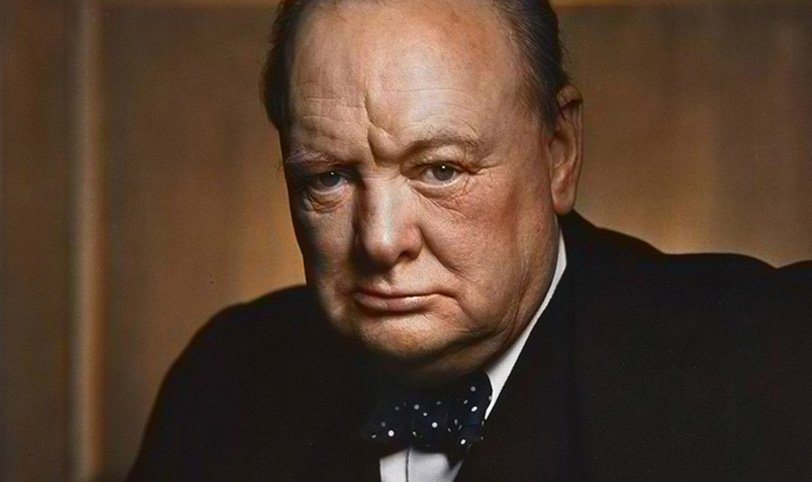

A Tribute to Winston Churchill
The man who saved the world from Hitler and Nazi barbarism and worse

Important events in Churchill's long life include:
- November 30, 1874 — Winston Leonard Spencer-Churchill was born to his father Lord Randolph, the third son of the John Spencer-Churchill, 7th Duke of Marlborough, and Jennie Jerome, the Brooklyn-born daughter of American millionaire Leonard Jerome, at Blenheim Palace.
- 1888 — After having attended two other schools and performed poorly academically, he entered Harrow School, where he continued his poor performance, although he excelled in history, and where his love and admiration of the English language had its genesis.
- 1893 — Churchill applies to and, on the third try, is accepted for admission to the Royal Military College, Sandhurst, where he is trained as an army calvary officer. He graduates in 1894, and starts looking for a war.
- January 24, 1895 — Lord Randolph Spencer-Churchill dies at age 45, after a period of ill health possibly due to the effects of syphilis. Churchill was 20 years old at this time and, suspecting that he too would not have a long life, became determined to make something of himself.
- July 3, 1895 — Churchill's nanny Mrs. Everest, his only source of emotional warmth and comfort his his childhood and his closest confidant up to that point in his life, dies. About her he wrote, "She had been my dearest and most intimate friend during the whole of the twenty years I had lived."
- 1895 — Churchill travels to Cuba to observe the Spanish fight insurgent Cuban guerilla, and had obtained a commission from an English pictorial newspaper to write about what he witnessed. He comes under fire on his 21st birthday, narrowly being missed by a bullet that kills the horse behind him. In Cuba he acquired his taste for Havana cigars, which he would smoke the rest of his life.
- 1896 — He is transferred to India, eventually going to the North West Frontier to fight in the Second Anglo-Afghan War. He later wrote an account of the Siege of Malakand.
- 1898 — Churchill is transferred to Egypt, and eventually participates in what has been described as the last meaningful British calvary charge, at the Battle of Omdurman in Sudan. He continued to work as a war correspondent, regularly filing dispatches to newspapers.
- 1899 — He resigns from the army and seeks his first opportunity for a career in the House of Commons, as a Conservative Member of Parliament for Oldham. He loses the election.
- 1900 — Churchill obtains a commission as a war correspondent and goes to report about the Second Boer War in South Africa. He is captured by the Boers while accompanying a scouting expedition in an armored train. He escapes the POW camp in Pretoria and makes his way more than 300 miles overland to what is now Mozambique. He returns to Britain the same year, stands for election to the House of Commons once again and is elected.
- 1904 — Churchill crossed the floor of the House of Commons and defects to the Liberal Party of David Lloyd George, which wins the following Parliamentary elections.
- 1908 — He married Clementine Hozier, whom he met four years earlier, at St. Margaret's, Westminster. As he later put it, "I married and lived happily ever afterwards."
- 1910 — Churchill is appointed Home Secretary, making him a member of the cabinet for the first time.
- 1911 — Churchill is appointed First Lord of the Admirality. In order to familiarize himself with aircraft as part of the preparation for the creation of naval flying squadrons, he learned how to fly.
- 1915 — Churchill's reputation is severely damaged due to his partial responsibility for the disaster at Gallipoli in Turkey during the First World War. He resigns from the government, rejoins the Army, and serves as a batalion comander on the Western Front in France, partially in an attempt to rehabilitate his reputation.
- 1921 — Churchill's mother dies, as does his daughter Marigold.
- 1922 — Churchill buys Chartwell, a country house and estate in Kent, which would be his and his wife's main home until his death.
- 1924 — Churchill rejoins the Consevative Party, saying, "Anyone can rat, but it takes a certain ingenuity to re-rat." He was appointed Chancellor of the Exchequer.
- 1929 — Churchill left the government after the Conservatives were defeated in that year's elections.
- 1931 — Churchill had a falling out with the Conservatives, and was not invited to join the coalition government of Ramsay MacDonald, starting a period in his life often called the "Wilderness Years." His dogged opposition to Indian independence made him a persona non grata politically.
- 1932 — Churchill visited Germany and saw first-hand the monstrous evil of the Nazis and the danger Hitler posed to Europe, and for the rest of the decade spoke out in Parliament warning against the rising power of Germany.
- 1939 — Churchill returns to the Admirality on the day Britain declares war on Germany.
- 1940 — Churchill becomes Prime Minister, the only politically viable candidate. He stubbornly refuses to consider a negotiated settlement after France is defeated and Britain stands alone. In Parliament he said, "[W]e shall defend our Island, whatever the cost may be, we shall fight on the beaches, we shall fight on the landing grounds, we shall fight in the fields and in the streets, we shall fight in the hills; we shall never surrender, and even if, which I do not for a moment believe, this Island or a large part of it were subjugated and starving, then our Empire beyond the seas, armed and guarded by the British Fleet, would carry on the struggle, until, in God's good time, the New World, with all its power and might, steps forth to the rescue and the liberation of the old."
- 1945 — The war being nearly over, a general election is forced upon Churchill by the opposition, one which the Conservatives badly lose. Churchill is out of office and out of the government once again.
- 1946 — He delivers his famous "Iron Curtain" speech in the United States.
- 1947 — Irritated what what historians have been writing about him, he starts writing his six-volume history The Second World War, for which he wins the Nobel Prize for literature in 1953.
- 1951 — The Conservatives win the general election and Churchill returns to power as Prime Minister.
- 1955 — He suffers a stroke, which precipitates his resignation and retirement from government.
- January 24, 1965 — He suffers a final stroke a week and a half earlier and dies at the age of 90.
"No leader did more for his country than Winston Churchill. Brave, magnanimous, traditional, he was like a king-general from Britain's heroic past. His gigantic qualities set him apart from ordinary humanity; there seemed no danger he feared, no effort too great for his limitless energies."
If you would like to know more about Sir Winston, you can visit this visit this web page.